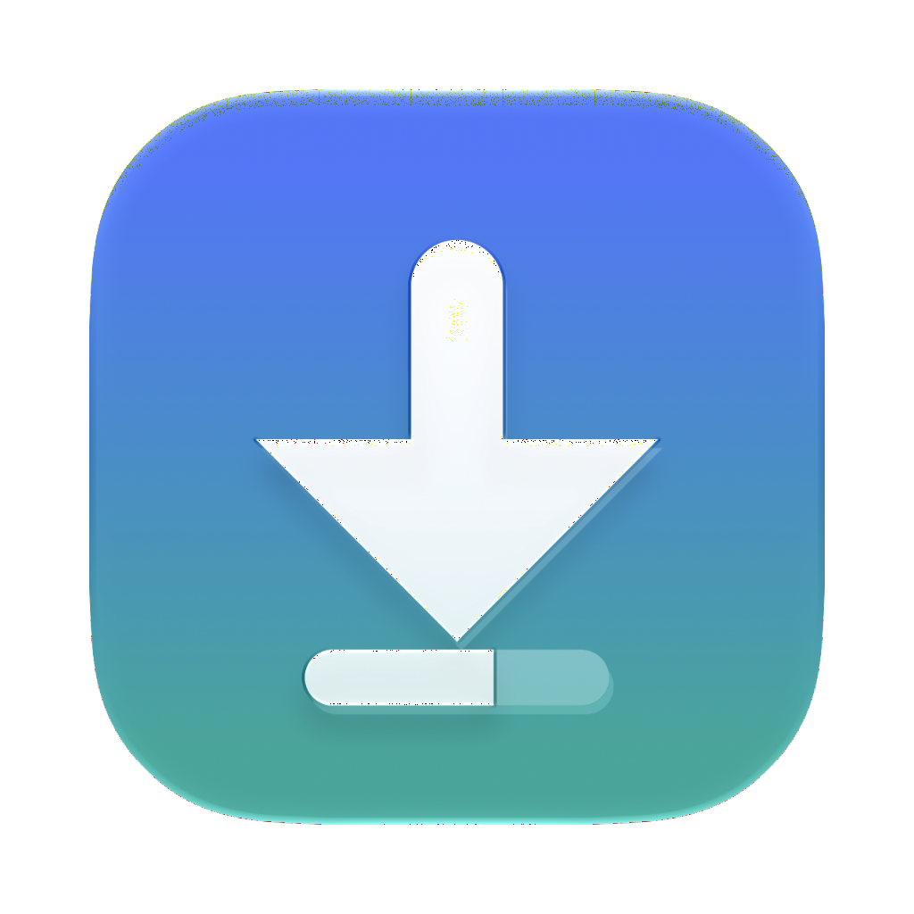
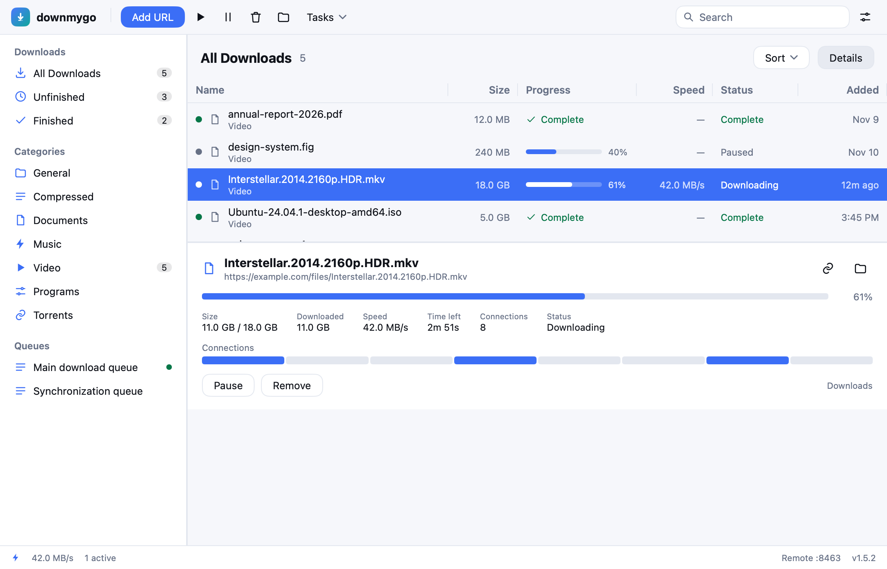
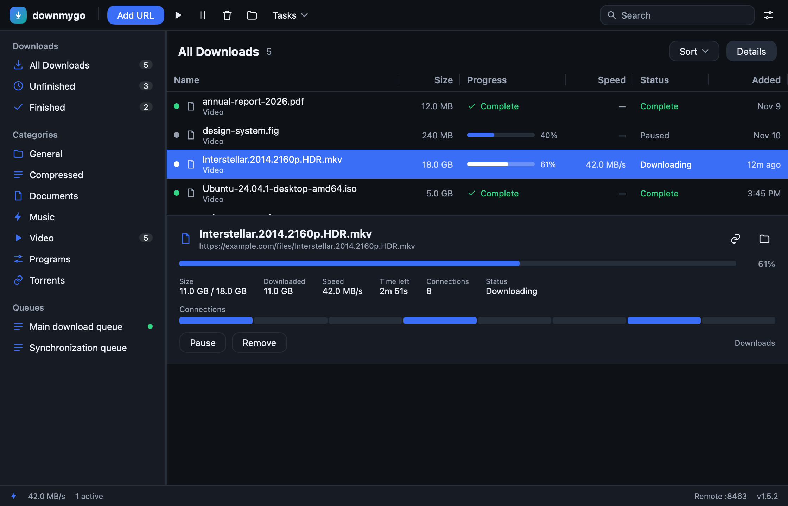

downmygo下载，即刻启程。
A cross-platform download manager in Go. The window is drawn natively, with no WebView, and the whole app is one binary.

Eight connections by default, the largest remaining segment split in two; a crash, a lost network or a restart continues where it stopped.
Magnets and .torrent files download here, with DHT, trackers and peers; seed to a ratio, and cap the upload.
yt-dlp for videos and gallery-dl for galleries, installed by the app when missing, with their progress in the list.
Chrome and Firefox extensions and a userscript: right-click, and the link comes here with the site's cookies.
DoH and DoT, and every connection can bind to one interface, so a dropped tunnel stops the traffic.
Checks GitHub for a new release, verifies its SHA-256, replaces the app and opens it again.
A .dmg on macOS, a setup.exe on Windows, a .deb or .tar.gz on Linux.
Paste a link, drop a torrent, or right-click with the extension installed.
Files go to their categories, archives can unpack themselves, and a phone on the same network can drive it.

downmygo get https://example.com/file.zip -o ~/Downloads -c 8
downmygo import links.txt # add every link of a file
downmygo grab https://… # print the links of a page
downmygo mcp # serve MCP on stdio
downmygo install-host <id> # register the browser's host
The local API listens on 127.0.0.1:8463 behind a token; turn on remote control and a phone can add and pause downloads.